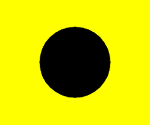
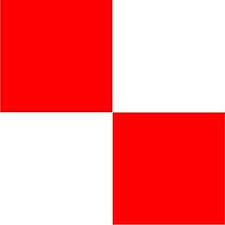

Cinq minutes, quelques pavillons et des signaux sonores. Suis la frise, découvre ce qui se passe en cas de retard, de rappel ou d'annulation, retrouve la règle de chaque pavillon, puis teste-toi avec le quiz.
Le signal sonore sert seulement à attirer ton regard vers le bateau comité. Le temps officiel part du moment où le pavillon monte ou descend. Si un signal sonore est raté ou en retard, c'est le pavillon qui compte. RCV 26
1 · La procédure normale
Clique sur un moment de la frise (T-5, T-4, T-1…) pour voir les pavillons au mât et entendre le signal sonore. Clique sur un pavillon pour lire sa règle.
2 · Quand ça ne se passe pas comme prévu
Le comité peut interrompre ou modifier la procédure à tout moment. Chaque situation a son pavillon et son nombre de signaux sonores.
Clique sur une situation pour la voir au mât.
3 · La subtilité de T-4
À T-4, le comité choisit un pavillon préparatoire. Au signal, ils se ressemblent tous, mais ils ne punissent pas de la même façon un bateau trop pressé pendant la dernière minute.
| Pavillon | Dans la dernière minute… | Sanction | Si rappel général |
|---|---|---|---|
| P | Règles normales. Si tu es du mauvais côté de la ligne au départ, tu dois revenir entièrement côté pré-départ, par où tu veux. | Rappel individuel (X) RCV 28 · 29.1 |
Tu prends le nouveau départ normalement. |
 I |
Si une partie de ta coque est au-dessus de la ligne ou de ses prolongements (côté parcours), tu dois revenir côté pré-départ en contournant une extrémité de la ligne (bouée ou bateau comité). | Retour par une extrémité RCV 30.1 |
Tu prends le nouveau départ normalement. |
 U |
Interdit d'être dans le triangle. Si tu y es, inutile de revenir. | Disqualifié sans instruction (UFD) RCV 30.3 |
La sanction tombe : tu peux courir le nouveau départ. |
| Noir | Interdit d'être dans le triangle. Ton numéro de voile sera affiché par le comité. | Disqualifié sans instruction (BFD) RCV 30.4 |
Tu restes disqualifié et tu ne peux pas courir le nouveau départ. |
4 · Les pavillons et leurs règles
Les numéros de règles renvoient aux Règles de Course à la Voile 2025-2028 (RCV), consultables en ligne sur le site d'arbitrage de la FFVoile. Les signaux comme l'aperçu, N, H, A, S ou le pavillon bleu sont décrits dans la partie « Signaux de course », au début du livre des règles.
5 · À toi de jouer
16 questions, des bases jusqu'aux subtilités des préparatoires et des rappels. Certaines questions ont un signal sonore : monte le volume.